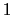
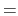

The graphics command draws low-level graphics primitives. These primitives can be used to draw a box around a molecule, or an arrow between two atoms, or place a text label somewhere in space. The command syntax is graphics <molid> <cmd>, where <molid> is a valid molecule id and <cmd> is one of the commands listed below. To create a ``blank'' molecule, use the Tcl command mol new. See the draw command for a possibly more convenient interface. Also refer to the VMD script library for some examples of user-defined graphics scripts.
As graphical primitives are added to the list they are assigned a unique, increasing id. The first object added is assigned 0 , the second is assigned  , etc. The commands which add an item return its value.
|dashed
] :
Draws either a solid or dashed line of the given width from the first point to the second. By default, this is a solid line of width 1.
|no
]:
Draws a cylinder of the given radius (default r 1) from the first point to the second. The cylinder is actually drawn as an n sided polygon. If the filled option is true, the ends are capped with flat disks, otherwise the cylinder is hollow (default). width of the base. The resolution parameter (default n 6) determines the number of polygons used in the approximation.
Draw a cone with the center of the base at the first point and the tip at the second. The radius(default r 1) determines the width of the base. As with cylinder, the resolution (default n 6) determines the number of polygons used in the approximation.
Draws a triangle with endpoints at each of the three vertices
Draws a triangle with endpoints at each of the first three points. The second group of three values specify the normals for the three points. This is used for making a smooth shading across the triangle. The normals must be normalized to unit-length for proper display.
Draws a triangle with endpoints at each of the first three points. The second group of three values specify the normals for the three points. The last three integers indicate the colors to apply to each vertex. This is used for making a smooth shading across the triangle. The normals must be normalized to unit-length for proper display.
Draws a sphere of the given radius (default r 1) centered at the vertex. The resolution (default n 6) determines how many polygons are used in the approximation of a sphere.
Displays the text string with the bottom left of the string starting at the given coordinates, with the font size scaled by the optional size parameter, and drawn with line thickness determined by the optional thickness parameter.
|off
:
Material properties are used to make the graphical objects
(lines, cylinders, etc.) be affected by the light sources. These make
the objects look more realistic, but are slower on machines which
don't implement materials in hardware (see
chapter 6.2 and
sections on color and
colorinfo commands
for the information on how to turn off
material characteristics for all objects in VMD). One surprising
effect of material characteristics is that lines are affected. In
some lighting situations, the lines can even appear to disappear.
Thus, you may want to turn off materials before drawing lines.